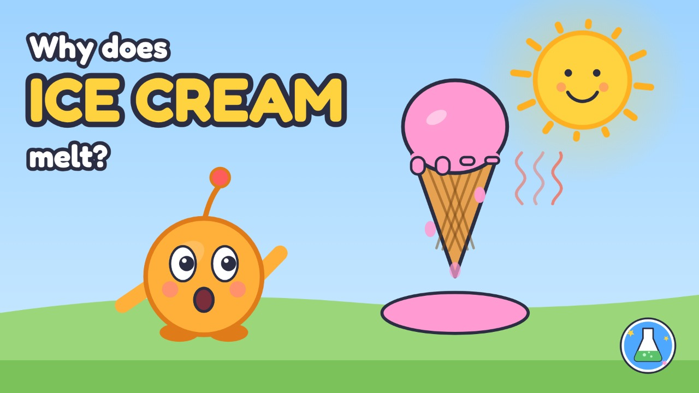
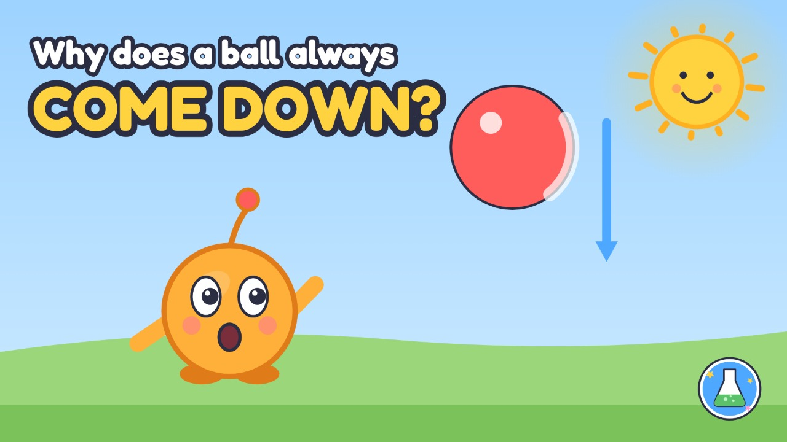
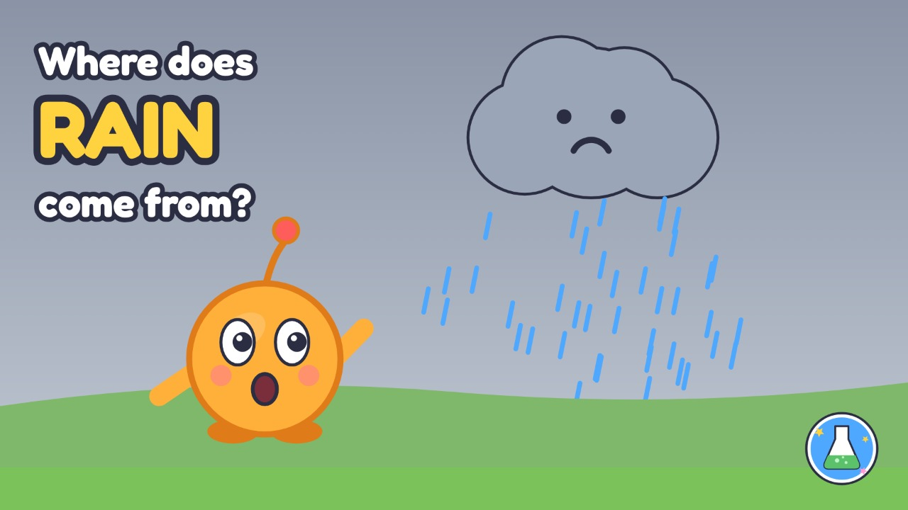
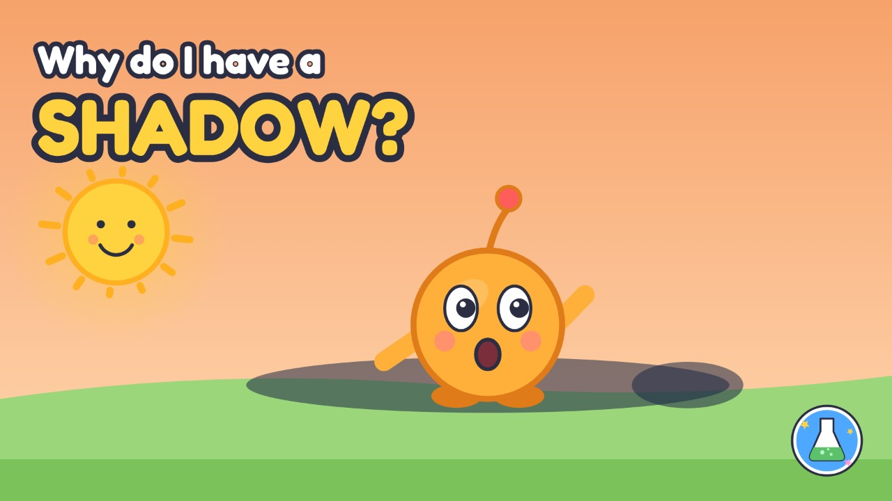
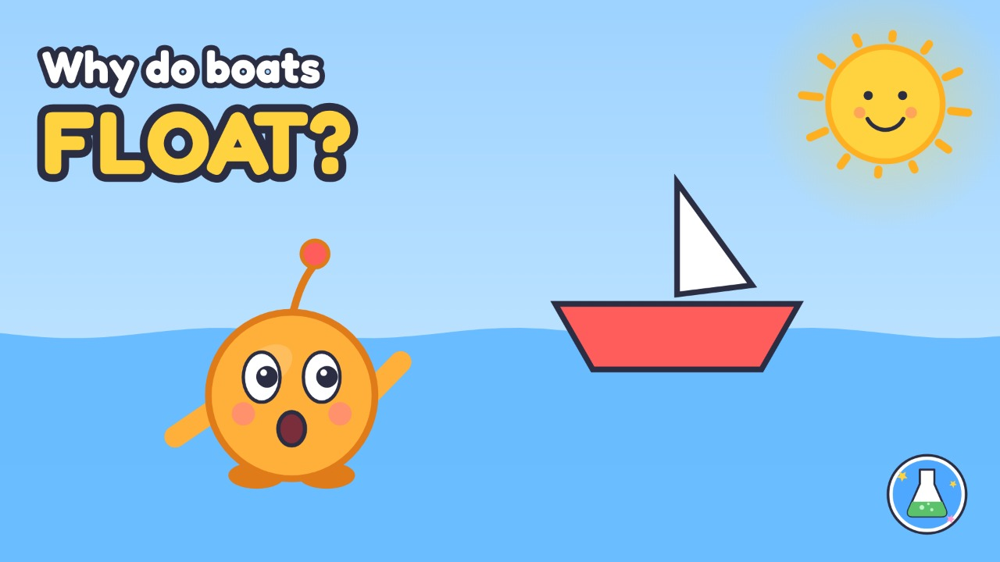

Every episode has a two-minute animated story and a hands-on simulation you can play with. Made for 5–6-year-olds, with a grown-up nearby.





Each episode page starts with the story, narrated by Curie with captions. Tap Try it to do the science yourself: drag the sun, throw the ball, make it rain, stretch a shadow, or sort things into the pond. Underneath you will find the big idea, an experiment to try at home, and a three-question quiz to talk about together.
Watch the story first, then tap Try it and do the science yourself.
Ice cream is made of tiny bits. When it is cold they hold on to each other tightly, so the ice cream is hard: a solid. Warmth from the sun or a hand gives the bits energy, they wiggle apart and slide past each other, and the ice cream becomes a liquid. In the freezer the bits slow down and grab hold again.
1. What makes ice cream melt?
2. Cold, hard ice cream is a...
3. Where does melted ice cream go to get hard again?
Watch the story first, then tap Try it and do the science yourself.
The Earth is enormous, and it pulls everything towards itself. We call that pull gravity. It is why a thrown ball always comes back down, why rain falls, and why our feet stay on the ground. Gravity makes big and small things fall together, so a big ball and a small ball dropped at the same time land together.
1. What pulls the ball back down?
2. A big ball and a small ball dropped together land...
3. Gravity keeps your feet...
Watch the story first, then tap Try it and do the science yourself.
The sun warms the sea, and tiny bits of water float up into the air as invisible water vapour. High in the sky it is cold, so the bits huddle into droplets, and millions of droplets make a cloud. The droplets bump and join until they are too heavy to float, then they fall as rain, which runs back to the sea. Round and round: the water cycle.
1. What lifts water up into the sky?
2. Millions of tiny droplets make a...
3. Rain falls when the drops get too...
Watch the story first, then tap Try it and do the science yourself.
Light travels in straight lines. When it hits your body it stops, because it cannot go through you, so the ground or wall behind you gets no light. That dark patch is your shadow. When the sun is low in the morning or evening, shadows stretch long; at noon, when the sun is high, they are short.
1. A shadow is where...
2. When the sun is low, your shadow is...
3. Light travels in...
Watch the story first, then tap Try it and do the science yourself.
When something sits in water it pushes some water out of the way, and the water pushes back up. A small, heavy stone pushes only a little water aside, so the push is too small and it sinks. A wide, hollow boat full of air pushes a lot of water aside, so the water pushes up hard enough to hold it. The same clay sinks as a ball and floats as a boat.
1. Water pushes...
2. A small stone sinks because it pushes away only a little...
3. The same clay floats when it is shaped like a...